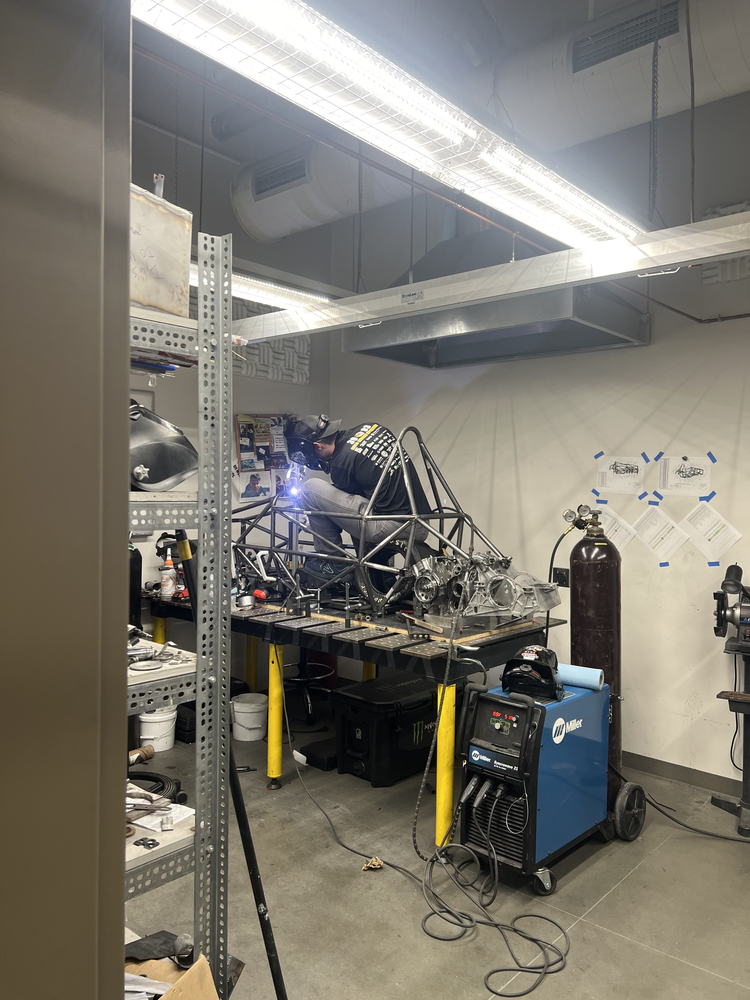
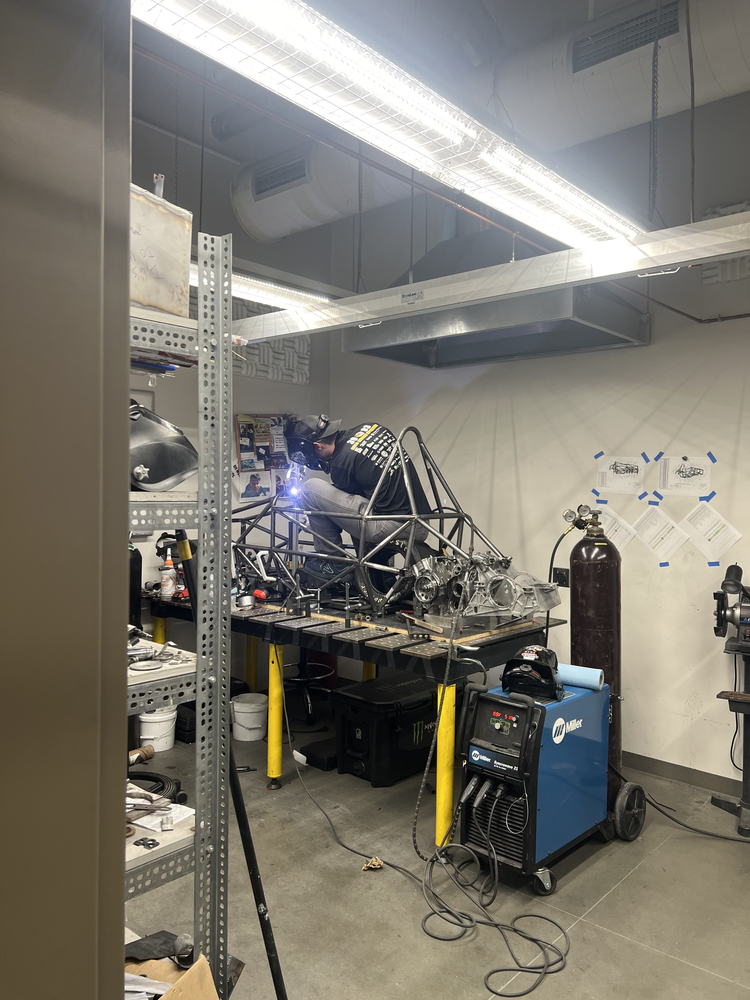
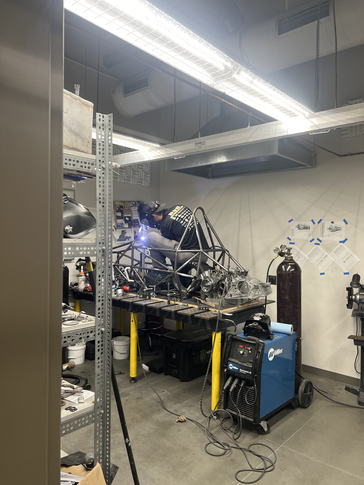

We run a Honda CBR600RR engine. Our Powertrain/Drivetrain system contains our intake manifold, exhaust, fuel system, fuel cell, dry sump oil system, electronic throttle, and pneumatic shifter. Our team designs and creates all of these components in house. We also tune the engine, electronic throttle, and pneumatic shifters using our chassis dynamometer.

Ben is a junior mechanical engineering major, and is also the Cheif Mechanical Engineer of Mizzou Racing. He joined the team in Fall 2022. This season, Ben has worked on a redesign of the intake and cooling systems , as well as a motor rebuild. He is also a member of our welding team and plays a huge role in chassis and accumulator fabrication.